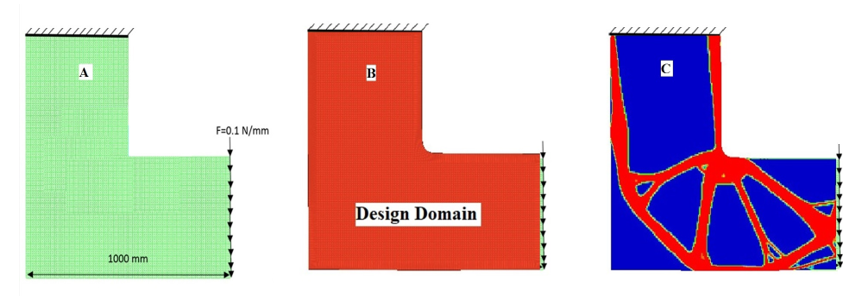

Fatige minimization
Challenges that we enjoyed solving

Static consideration of stress-strain problems is the most common way of handling mechanical designs. However, dynamic loading tends to give a failure is not a predictable way (in the scope of previously mentioned static yielding criteria). The word “fatigue” is used to describe the unexplained failure done by reversed dynamic loading. With the development of steam engines, railroad axels, for example, are failed after the relatively short term of service. This made many scientific societies in Europe work independently to study this phenomenon. Especially after the disaster of the Versailles rail accident in France. It is being registered that the first simulation apparatus of fatigue is been made by Albert in German Confederation (1829). Since 1841 the fatigue subject was studied intensively by Rankine in the United Kingdom followed by Wohler in Germany. Wohler invented his testing apparatus with which he established the timeless prediction of fatigue, distinguishing fatigue from creep. As been said, about science that it is not always where what the scientist wants it to be, Wohler established the following remarks for the first time .
1- The number of stress cycles is the fact of determining failure rather than test elapsed time
2- Ferrous materials with stress loading below a certain limit (endurance limit) can withstand loading indefinitely
Simply, fatigue failure has three stages, crack nucleation, crack propagation, and finally fracture. The crack propagation approach is considered the logical approach since fatigue is a result of the crack in the first place. Moreover, it has been noticed that the crack initiations period may cover most of the fatigue life; especially in high cycle fatigue (HCF). As more detailed consideration of fatigue problem especially for metals, it states with localized plastic strain, cyclic hardening and softening, then followed by more visible failure i.e.
Fatigue life is a cycle counter. In other words, the modeling and the consideration of fatigue are not for the time of operation rather than how many stress cycles is predicted. Many researchers studied fatigue concentrating based topology optimization . The results were similar to stress-based topology optimization, in shape, design methodology, and results. For the work in hand, the optimization objective function is minimizing the volume, with fatigue life calculated by the famous model introduced by the rain flow method.
crack initiation and the repetition of the previously mentioned cycle which introduced the crack growth. Slip bands are done as an action representing the plastic strain. it has been noticed that slip behavior is intricately linked to the metal structure and strain conditions. So, slip is anticipated to occur along the plane of the densest atoms (Figure.9). It is worth mentioning that slip is not a straightforward process. Slip lines can be complicated, taking curvy lines or even cross slip. This is happening due to obstacles and crystal defects. Generally, in one-phase metals, slip bands are the main source of a microcrack. The surface layer is the anticipated part to crack to happen. This is shown by many research and experiments including systematic surface polishing by ablation, surface oxidation, and surface hardening. Surface hardening can aggravate crack nucleation such that a severe transition region between the two phases of metal. The hardening process id depending on in general on making a stronger phase and refining the crystal dimension by extracting the solid solution energy to the ground state with shorting the time of transition to crystallization temperature by self-quenching in laser hardening as an example. The different phases cause stress resilience drops in the interface which promotes shear. Also, the difference in electronic intensity of the coexisting metal solution is not in the favor of the chemical stability of the metal, so it is proportional to corrosion and aggression. Not all microcracks developed and propagate. Crack to propagate generally needs to pass the two stages. The first stage is extending itself in slip planes. Usually not deeper than a few crystals. This is mostly associated with the maximum shear stress plane. In stage two, the crack grows macroscopically.
